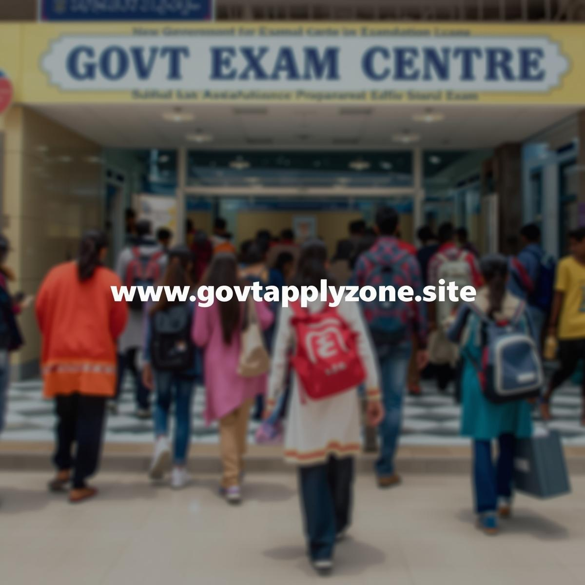
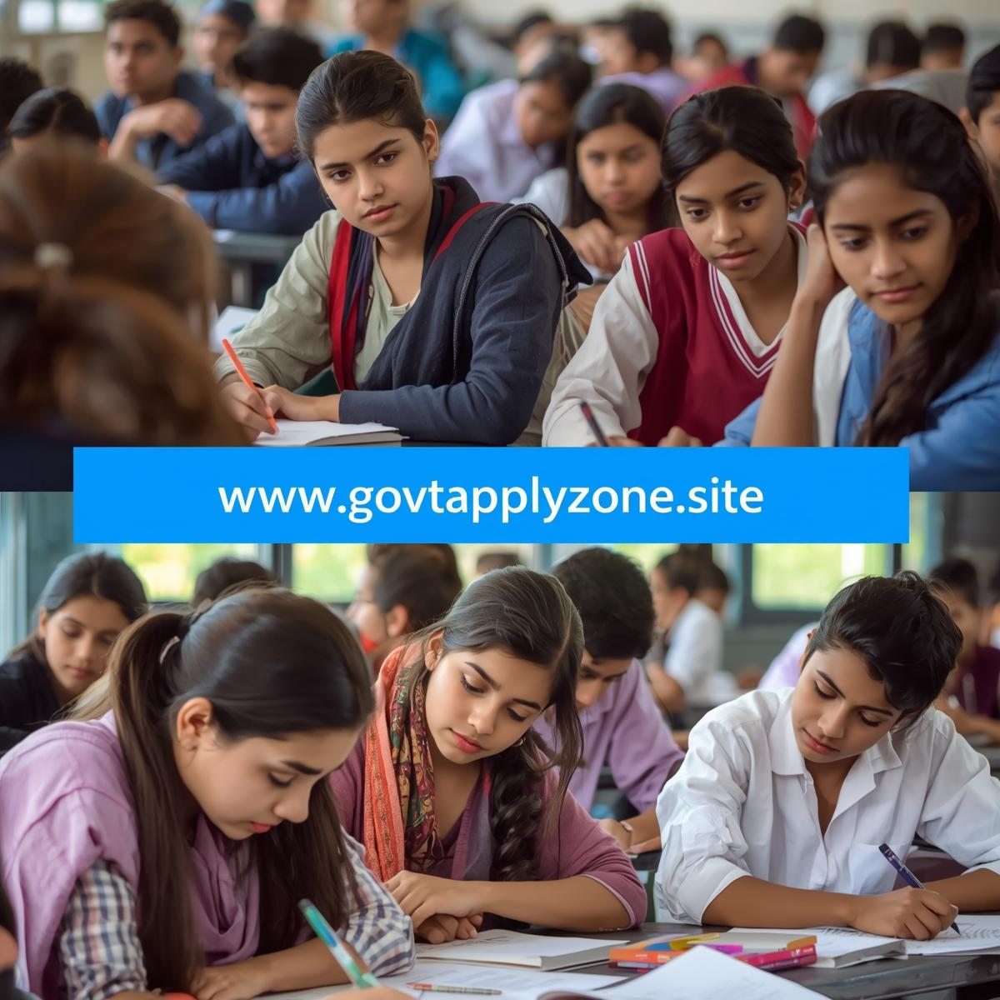

Official Notification Published
BSSC released the state CGL notification: eligibility, vacancies, application dates and exam schedule. Download the official PDF for post-wise details.
State Combined Graduate Level exam — Prelims • Mains • Interview
Tap "View Details" to open full page (desktop shows full page by default).
Official notification, application window, admit cards and answer keys for BSSC CGL 2025 (state).
BSSC released the state CGL notification: eligibility, vacancies, application dates and exam schedule. Download the official PDF for post-wise details.

Online applications typically run for 2–3 weeks. Keep documents (degree, ID, photo) ready for upload.

Admit cards and city intimation will be published on the BSSC portal. Check login details and exam centre carefully.
State-level positions include revenue, clerical, enforcement & technical posts — check post-wise requirements in the PDF.
The State Combined Graduate Level (CGL) exam—conducted by the State Staff Selection Commission—selects graduates for a variety of state government posts. This state-level variant focuses on state-relevant topics in addition to national-level general studies and aptitude.
Graduates who meet the residency/eligibility criteria laid out in the notification and are prepared for multi-stage selection (Prelims, Mains, Interview/Skill Test).
Usually includes General Studies (national + state), Reasoning/Aptitude and basic numeracy. Paper structure varies by state—follow the official notification.
Mains can include descriptive papers and post-specific tests (typing, computer proficiency, trade tests). Carefully read the post-wise selection criteria in the PDF.
State notification contains exact vacancy breakdown by post & category. Expected vacancies: several hundred to a few thousand depending on the state cycle and departments.
Download Vacancy PDFState CGL exams are conducted in multiple centres across the state. City intimation and exact centre details will be on the admit card.
Combine national-level study with state-specific revision. Follow the 12-week plan below adapted for state syllabus emphasis.
State CGL cutoffs vary widely by vacancies & difficulty. Use past cutoffs to set realistic targets — aim 5–7% above previous UR cutoff for safety.
| Category | 2024 | 2023 |
|---|---|---|
| General (UR) | 130–150* | 125–145* |
| OBC | 120–138 | 115–130 |
*Ranges indicative only — final cutoffs published by BSSC.
Q: How to apply for BSSC CGL?
A: Apply online via the state SSC portal. Keep scanned documents ready and follow form instructions carefully.
Q: Can out-of-state candidates apply?
A: Eligibility and domicile rules depend on state notification. Some states require domicile; others allow wider eligibility—read the official notice.
Q: Which books to use?
A: NCERTs for basics, standard texts for Polity (Laxmikanth), modern Indian history (Spectrum), and state-specific compendiums for Bihar GK. Pair books with current affairs and test series.